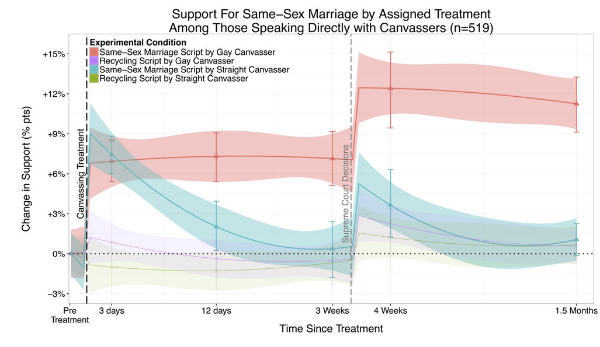
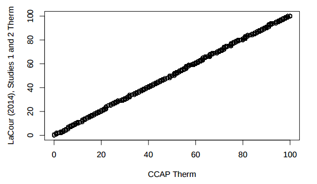
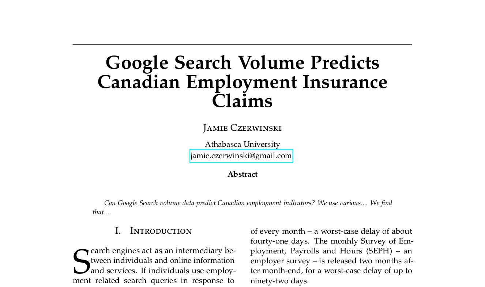
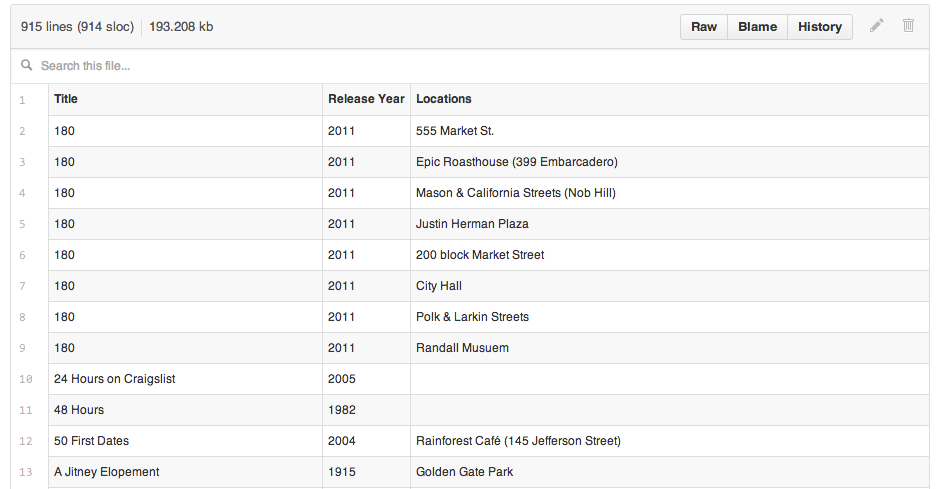

Open Science
by
Jamie Czerwinski
jamie.czerwinski@gmail.com
Submitted in partial fulfillment of the requirements for the degree of Master of Science in Information Systems at Athabasca University as coursework for.
Computer Science 601
Survey of Computing and Information Systems
Assignment 3
Instructor: Richard Huntrods
Sunday, February 27, 2016
What is Open Science?
Bringing it together...
- Open Science
- Open Science is the pursuit of knowledge of the world following freely accessible, usable, modifiable, and shareable methodologies based on evidence.
Why Open Science?
Open Science is:
- easier to verify (more falsifiable)
- more trustworthy
- easy to extend
- easy to teach
- easy to learn
How can Open Science help?
Gay Canvassing Study
In 2014, Michael LaCour and Donald Green had their study When contact changes minds: An experiment on transmission of support for gay equality
published in Science.
The study concluded that having gay canvassers discuss gay marriage equality with participants increased support for gay marriage equality among participants.
How can Open Science help?
Gay Canvassing Study

How Can Open Science Help?
Gay Canvassing Study
Broockman and Kalla soon discovered evidence that the study was fraudulant, but not without difficulty.
LaCour never published his survey data. The was discovered by comparing the distribution of results from the paper with the distribution of another privately available dataset that LaCour had access to.
How Can Open Science Help?
Gay Canvassing Study
Q-Q Plot of Private Dataset vs LaCour Results

How Can Open Science Help?
Gay Canvassing Study
- Green -- LaCour's respected senior co-author -- could have required a more open design, leading him to discover the irregularities before submission to Science
- Open Data could have helped critics analyze the paper more deeply than they were able
- A culture of Open Science would cast skepticism on studies that are not open
- Such skepticism could trigger deeper peer review that might catch the fraud before publication
How Can Open Science Help?
Most Research Findings are False
Evidence suggests that most published research results are false.
Open Science can help by:
- Ensuring experiments and analyses are more easily repeated, increasing the volume of replication studies
- Allow for re-use of existing data in new analyses
- Make meta-analyses easier by increasing the volume of replica studies and making them more easily accessible
Elements of Open Science
- Open Methodology
- Open Source
- Open Data
- Open Access
- Open Peer Review
- Open Educational Resources
Open Methodology
What is Open Methodology?
Open Science Projects should:
- Use non-proprietary research methods
- Use methods described by open standards
- Comprehensively describe these methods in plain language
- Uses Open Source software to implement these methods
Open Methodology
Why use Open Methodology?
- Proprietary methods impose a monetary barrier on researchers
- Proprietary methods may not be Open to Peer Review
- Methods should be as simple and accessible as possible while still meeting research objectives
- Open Data can mitigate intrinsically high barriers -- eg. Particle accelerators, space science
- Open Methodology makes Open Peer Review possible
Open Methodology
Case Study: BRCA1 and BRCA2 Genetic Test Patent
- Myriad Genetics held and enforced US patents giving it a monopoly over genetic tests for breast cancer
- Until 2013, methods relying on these tests could not be considered open
- In 2013-June, the SCOTUS invalidated the patent
- After this ruling, such methods would be considered open
Open Source
Open Science projects should:
- Use free and open source software
- License any custom software used in the project under an open source license
- Publish this software in a publically accessible repository like GitHub or BitBucket
- Make computations and manuscript generation reproducible with a few commands
Open Source
Why use Open Source?
Open Source
Example
Instruct researchers to start from a fresh install of Ubuntu 14.04.4 LTS
Ubuntu does not need to be installed and can run live from its installation media.
Open Source
Example
Provide a short script that will install the system-level dependencies required to acquire and prepare the project environment.
sudo apt-get install git node-js
Open Source
Example
Get the project and run it!
git clone https://github.com/jczerwinski/google-trends-ei-claims
cd google-trends-ei-claims
# These lines will depend on the packages and scripts
npm install
npm start
Open Source
Example
That's all that should be required to install any dependencies, get the project, download project data, perform the project analysis, and render a completed report from a template.

Open Source
Example
And of course, use an open source license.
Permission is hereby granted, free of charge, to any person obtaining
a copy of this software and associated documentation files
(the "Software"), to deal in the Software without restriction,
including without limitation the rights to use, copy, modify, merge,
publish, distribute, sublicense, and/or sell copies of the Software,
and to permit persons to whom the Software is furnished to do so...
Open Science projects should:
- Use widely trusted, publically accessible data sources whenever possible
- Use data formats and repositories that are both machine and human readable
- Use data published under an Open Data License
- Publish any data generated by the project consistent with the above
Why use Open Data?
- Allows researchers to compare their data to yours to help detect errors in collection
- Supports aggregation of your data in meta-analyses
- Enables complementary research on your data set
- Demonstrates integrity against data falsification
Good Data Formats
Tab Separated Values (TSV)
col_1 col_2 col_3
a b c
1 2 3
Apple Orange Banana
Car Truck Plane
- Highly human readable
- Highly machine readable
- Compact
- Only supports tabular data
Good Data Formats
Tab Separated Values (TSV)
Bonus: GitHub renders TSVs nicely.

Good Data Formats
YAML
invoice: 34843
date : 2001-01-23
bill-to: &id001
given : Chris
family : Dumars
address:
lines: |
458 Walkman Dr.
Suite #292
city : Royal Oak
state : MI
postal : 48046
ship-to: *id001
Good Data Formats
YAML
- Highly human readable
- Highly machine readable
- Moderately compact
- Supports many data types
Good Data Formats
XML
QWZ5671
39.95
Red
Burgundy
Red
Burgundy
RRX9856
42.50
Red
Navy
Burgundy
Red
Navy
Burgundy
Black
Navy
Black
Burgundy
Black
Good Data Formats
XML
- Highly machine readable
- Moderately human readable
- Supports many data types
- Moderately verbose
Bad Data Formats
XLS (Microsoft Excel)
- Poorly machine readable -- complex, proprietary
- Not human readable -- binary format
- Supports many data types
Original Research Data
Release original research data:
- As soon as it is available
- As raw as possible
- In its own repository, independent of analysis
Why?
- Usable by other researchers
- Helps prevent data falsification to support hypotheses during analysis phase
Open Access
Open Science projects should publish their results in Open Access journals, or otherwise make their results freely available on the web.
Why?
Open Access reduces monetary and institutional barriers to independent researchers.
Open Access
Publishing Models
- Green Open Access - Author hosts paper on a self-hosted or community-hosted server. Not peer reviewed.
- Gold Open Access - Author submits paper to Open Access journal. Author pays journal for peer review and publication service
- Hybrid Open Access - Author submits paper to traditional journal. Journal provides Open Access to article
- Traditional Journals - Author submits paper to journal. Journal charges subscribers for access
Open Peer Review
Open Science projects should publish in journals that:
- Publish the identity of editors and referees
- Publish the contents of peer review communications
- Facilitates peer review from the public
Open Peer Review
Referee and Editor Attribution
Why publish editor and referee identities?
- Incentivizes reviewers to be fair and balanced
- Allows readers to consider the source of the reviews
Open Peer Review
Review Disclosure
Why disclose the content of peer review?
- Helps readers better understand the nature of criticisms of the study
- Encourages high quality review content
Open Peer Review
Public Peer Review
Public Peer Review enables members of the general public to comment on an article in a public forum that is published with the article
Why public peer review?
- Encourages more people to participate in the scientific process
- Encourages interdisciplinary collaboration
Open Peer Review
Example: F1000Research
A 2015 study found that, among four STEM journals, only F1000Research met all its criteria for following an Open Peer Review process.
Ulrich Pöschl -- one of the study's referees -- wrote:
Overall, I see no well-founded basis for the claim that the particular form open peer review practiced by F1000Research would deserve the attribute “gold standard of open peer review”, and I would suggest to substantiate or drop this postulate.
Open Peer Review
Example: F1000Research
Ironically, this complaint would not be publicly accessible if the study were published in any of the other three journals assessed in the study!
Open Educational Resources
Open Science projects should promote, teach about, encapsulate and distribute their work using open educational resources.
Examples
- Provide a permissively licensed slide deck summarizing the project that is publically available and permissively licensed
- Create and distribute reusable learning objects that encapsulate elements of the project likely to be of value to educators
Conclusion
Projects that are consistent with these elements can be considered Open Science Projects:
Elements of Open Science
- Open Methodology
- Open Source
- Open Data
- Open Access
- Open Peer Review
- Open Educational Resources
Quiz
Take this quiz to test your understanding of the material presented.
That's it! Thanks for reading!
References
[1]ASSOCIATION FOR MOLECULAR PATHOLOGY ET AL . v. MYRIAD GENETICS, INC., ET AL. 2016.
[2]D. Broockman, J. Kalla and P. Aronow, "Irregularities in LaCour (2014)", 2015. [Online] Available: http://stanford.edu/~dbroock/broockman_kalla_aronow_lg_irregularities.pdf
[3]"File:Red x.svg - Wikimedia Commons", Commons.wikimedia.org, 2005. [Online]. Available: https://commons.wikimedia.org/wiki/File:Red_x.svg. [Accessed: 28- Mar- 2016].
[4]“Global OER Logo | United Nations Educational, Scientific and Cultural Organization.” [Online]. Available: http://www.unesco.org/new/en/communication-and-information/access-to-knowledge/open-educational-resources/global-oer-logo/. [Accessed: 25-Mar-2016].
References
[5]File:Green check.svg - Wikimedia Commons", Commons.wikimedia.org, 2016. [Online]. Available: https://commons.wikimedia.org/wiki/File:Green_check.svg. [Accessed: 28- Mar- 2016].
[6]“Hidden surprises in the Bitcoin blockchain and how they are stored: Nelson Mandela, Wikileaks, photos, and Python software.”
[7]A. mike_bader, “lacour and the opportunity costs of intransigent irb reviews,” scatterplot, 21-May-2015.
[8]“od_640x120_blue.png (640×120).” [Online]. Available: http://assets.okfn.org/images/ok_buttons/od_640x120_blue.png. [Accessed: 24-Mar-2016].
[9]“Open access,” Wikipedia, the free encyclopedia. 17-Mar-2016.
[10]“Open Data Commons Open Database License (ODbL) | Open Data Commons.” [Online]. Available: http://opendatacommons.org/licenses/odbl/. [Accessed: 24-Mar-2016].
References
[11]E. Ford, “Open peer review at four STEM journals: an observational overview,” F1000Research, Jan. 2015.
[12]S. Kasberger, “Open Science,” openscienceASAP, 08-Aug-2013. [Online]. Available: http://openscienceasap.org/open-science/. [Accessed: 26-Mar-2016].
[13]"Inderscience Publishers - linking academia, business and industry through research", Inderscience.com, 2016. [Online]. Available: http://www.inderscience.com/info/inarticle.php?artid=45454. [Accessed: 28- Mar- 2016].
[14]“OP_RETURN and the Future of Bitcoin - Bitzuma.” [Online]. Available: http://bitzuma.com/posts/op-return-and-the-future-of-bitcoin/. [Accessed: 26-Mar-2016].
[15]“OSI Logo Files | Open Source Initiative.” [Online]. Available: https://opensource.org/node/442. [Accessed: 23-Mar-2016].
References
[16]“Our definition of science,” The Science Council. [Online]. Available: http://sciencecouncil.org/about-us/our-definition-of-science/. [Accessed: 26-Mar-2016].
[17]“Rendering CSV and TSV data - User Documentation.” [Online]. Available: https://help.github.com/articles/rendering-csv-and-tsv-data/. [Accessed: 24-Mar-2016].
[18]“Retrospective analysis of the quality of reports by author-suggested and non-author-suggested reviewers in journals operating on open or single-blind peer review models -- Kowalczuk et al. 5 (9) -- BMJ Open.” [Online]. Available: http://bmjopen.bmj.com/content/5/9/e008707. [Accessed: 25-Mar-2016].
[19]“The Open Definition - Open Definition - Defining Open in Open Data, Open Content and Open Knowledge.” [Online]. Available: http://opendefinition.org/. [Accessed: 26-Mar-2016].
References
[20]“Ubuntu 14.04.4 LTS (Trusty Tahr).” [Online]. Available: http://releases.ubuntu.com/14.04/. [Accessed: 24-Mar-2016].
[21]“Ubuntu logo | Ubuntu Design.” [Online]. Available: http://design.ubuntu.com/brand/ubuntu-logo. [Accessed: 24-Mar-2016].
[22]J. P. A. Ioannidis, “Why Most Published Research Findings Are False,” PLoS Med, vol. 2, no. 8, Aug. 2005.
[23]“YAML Ain’t Markup Language.” [Online]. Available: http://www.yaml.org/start.html. [Accessed: 25-Mar-2016].